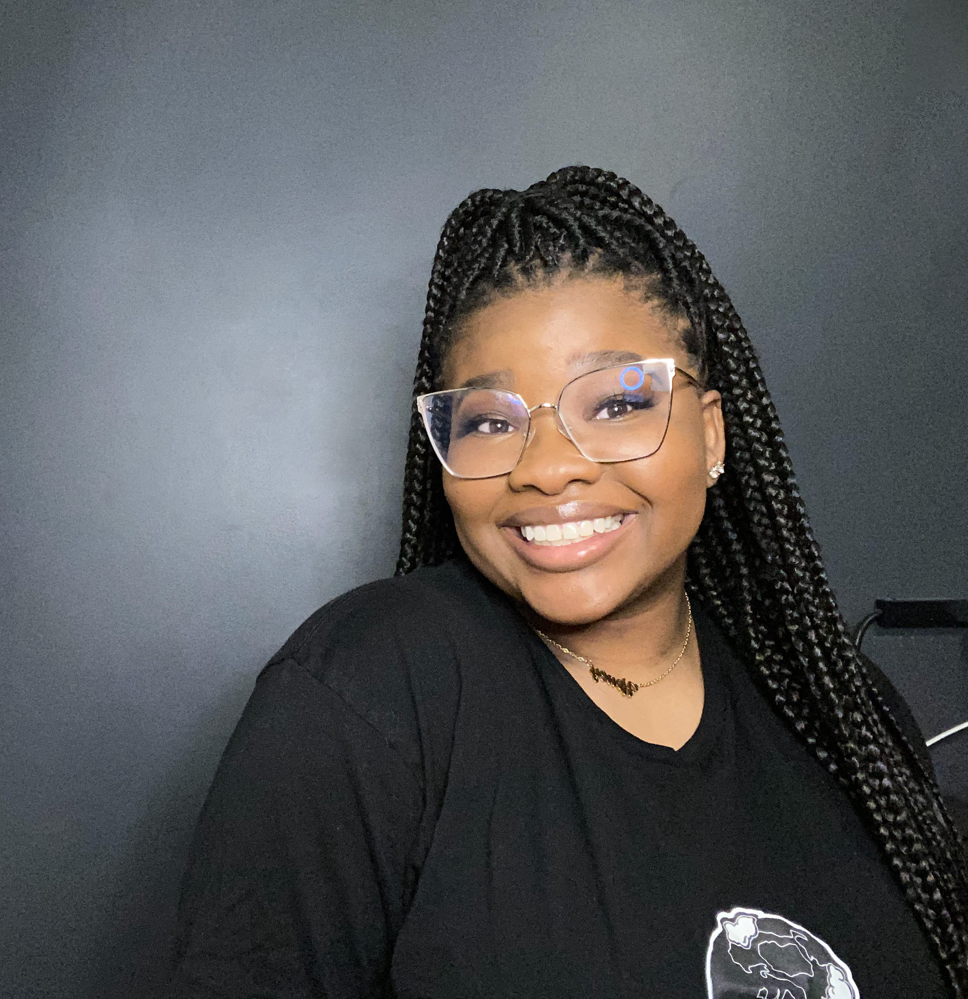

About Me

My Introduction to coding happened in college through a required course called Writing in Electronic
Environment. Through this course, I was introduced to HTML and CSS and while I did not notice it at
the time fell in love with coding. It was one of the few courses I took, where I found myself
completing the assignments well before the due date and even attempting to go above and beyond the
requirements.
Then in 2020 two years later my friend wanted to start a traveling itinerary business and need to
build a website. However, she is not at all tech-savvy, so I offered to help her create it. She
hosted her site on Squarespace and I was able to create a site that she loved, and I was also able
to rediscover my love of coding.
One thing that I found when creating her website was the limitations that hosting on a web builder
site could have, this encouraged me to look into learning how to build one from scratch and maybe
freelance as a web developer. I quickly found that freelancing was not for me and through my
research I was able to find Skillcrush and start my path to becoming a developer.